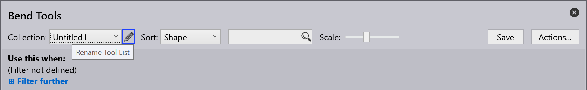
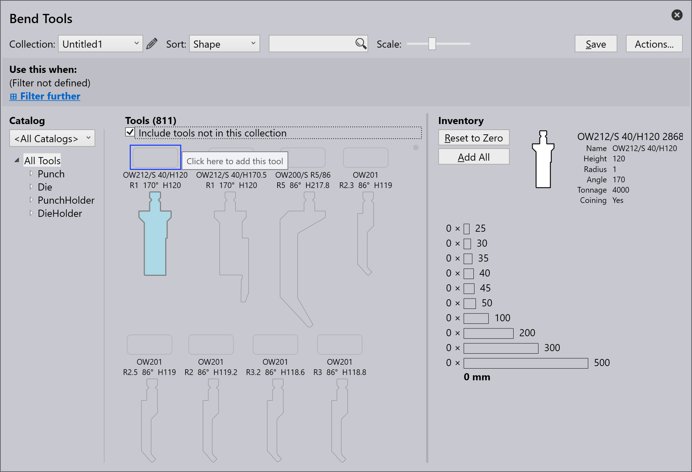

Ohýbací nástroje
Níže jsou popsány termíny používané při vytváření ohýbacího nástroje:
| S.Č | Termín | Význam |
|---|---|---|
1 |
Seznamy nástrojů |
Zde lze vybrat seznamy nástrojů, se kterými se bude pracovat. Nové seznamy nástrojů lze vytvořit pomocí možnosti Nový. |
2 |
Řazení |
Nástroje lze zde řadit podle konkrétních kritérií (výška, název, tvar, poloměr, úhel, šířka nástroje, priorita, správa nástrojů). |
3 |
Vyhledávání |
Nástroje lze vyhledávat pomocí vyhledávacího pole. Zde lze například provést abecední vyhledávání názvů nástrojů. Navíc lze zadávat složitější vyhledávací dotazy. Tento vyhledávací dotaz najde všechny nástroje s UT nebo EV v názvu, které také splňují následující podmínky: úhel ≤ 30, výška ≥ 140, výška ≤ 220, poloměr = 1. |
4 |
Změna měřítka |
Velikost zobrazení nástrojů lze změnit pomocí posuvného regulátoru. |
5 |
Akce |
Lze provést následující akce: - A Přidat katalog: Pro přidání různých typů strojů. - B Nový seznam nástrojů: Vytvoření nové kolekce nástrojů. - C Klonování seznamu nástrojů: Klonování vytvořené kolekce nástrojů. - D Export seznamu nástrojů: Aktuální seznam nástrojů lze exportovat jako soubor „.btools“. - E Import seznamu nástrojů: Seznam nástrojů lze importovat jako soubor „.btools“. - F Import z ARV: Nástroj lze importovat ze souboru ARV, tyto nástroje se poté uloží do katalogu nástrojů (ten se vytvoří, pokud předtím nebyl k dispozici). - G Import z DXF: Nástroj lze importovat ze souboru DXF. Tyto nástroje se poté uloží do katalogu nástrojů (ten se vytvoří, pokud předtím nebyl k dispozici). - H Reset seznamu nástrojů: Obnoví seznam nástrojů do výchozího stavu. - I Zrušit: Zavře okno „Akce…“ . |
6 |
Správa nástrojů |
Zobrazuje přehled vybraného nástroje. Lze provést následující akce: - Reset na nulu: Celý inventář vybraného nástroje je odstraněn z aktuálního seznamu nástrojů. -Přidat jednu sadu: Do aktuálního seznamu se přidá pouze jedna sada vybraného nástroje. -Přidat délku: Pro přidání délky nástroje - Přidat vše: Kompletní inventář vybraného nástroje se načte do aktuálního seznamu nástrojů. Inventář je definován v seznamu nástrojů <Všechny nástroje>. - Uložit: Pro uložení provedených změn. |
7 |
Stav nástrojů |
Zobrazí inventář vybraného nástroje. Kliknutím levým tlačítkem myši přidáte segment. |
8 |
Nástroj bez inventáře |
Nástroj bez inventáře není zahrnut do aktuálního seznamu nástrojů. Kliknutím na prázdné pole se přidá standardní inventář pro nástroj a nástroj se zařadí do aktuálního seznamu nástrojů. |
9 |
Priorita |
Nástroj je vybrán na základě priority stanovené uživatelem. 1 = Nástroj s vysokou prioritou 5 = Nástroj s nízkou prioritou |
10 |
Oblast zobrazení nástrojů |
V oblasti zobrazení nástrojů se zobrazují všechny nástroje z vybraného seznamu nástrojů. Nástroje bez inventáře lze také zobrazit pomocí zaškrtávacího políčka „Zahrnout nástroje bez inventáře“. |
11 |
Filtr nástrojů |
Zde jsou nástroje aktuálního seznamu nástrojů uspořádány podle typu a tvaru. Výběrem prvku v této struktuře lze provést filtrování. |
12 |
Katalog |
Pomocí tohoto tlačítka lze vybrat jeden z mnoha nainstalovaných katalogů nástrojů (včetně TRUMPF, vlastních atd.). |
13 |
Podmínka filtru |
Podmínka filtru pro aktuální seznam nástrojů, která je automaticky používána auto-toolerem. Toto lze použít pro pojmenovaný seznam nástrojů, ale ne pro speciální seznam <Všechny nástroje>. Je možné filtrovat podle různých aspektů, včetně stroje, materiálu, tloušťky plechu atd. |
Vytvoření seznamu nástrojů
-
Chcete-li vytvořit nový seznam nástrojů, klikněte na tlačítko Akce a vyberte možnost Nový seznam nástrojů.

-
Přejmenujte seznam nástrojů kliknutím na ikonu úprav .

-
Ve výchozím nastavení nový seznam nástrojů zobrazuje všechny nástroje včetně razníku, matrice, držáku razníku a držáku matrice, které však nejsou přidány do inventáře. Ujistěte se, že je zaškrtnuto zaškrtávací políčko Zahrnout nástroje, které nejsou v této kolekci.

-
Chcete-li přidat nástroj, klikněte na čtvercové políčko nad názvem nástroje a klávesouctrl+enter odstraňte nástroj.

-
Možnost Použít při umožňuje uživateli filtrovat a nastavit pravidla pro nový seznam v závislosti na různých kritériích.
-
Kliknutím na tlačítko Uložit přidáte tento seznam nástrojů do kolekce.
Přidání pravidla pro seznam nástrojů
Kliknutím na možnost Další filtr můžete použít pravidlo z různých dostupných kritérií filtru.
-
Stroj - Označuje stroj používaný pro procesy ohýbání.
-
Materiál - Označuje typ ohýbané látky.
-
Tloušťka - Označte tloušťku ohýbaného materiálu.
-
Poloměr - Odkazuje na zakřivení ohybu.
-
Povrch - Popište vnější strukturu nebo povrchovou úpravu materiálu.
-
Opracování - Popisuje všechny procesy před nebo po ohýbání, které byly na materiál aplikovány, například tepelné zpracování, povrchová úprava nebo galvanizace.
-
Film - Odkazuje na ochrannou nebo funkční vrstvu nanesenou na materiál.
-
Značka - Vlastní štítek přiřazený ke kategorizaci, filtrování a organizaci prvků pro snadnější identifikaci.
| Seznam nástrojů musí obsahovat alespoň jedno kritérium filtrování, aby mohl být uložen (v opačném případě by byl tento seznam nástrojů použit pro všechny díly). |

Níže uvedený obrázek ukazuje příklad kritérií použitých k vytvoření pravidla:
| Pokud více seznamů nástrojů odpovídá konkrétním požadavkům na nástroje, použije se seznam nástrojů s nejkonkrétnější shodou. |